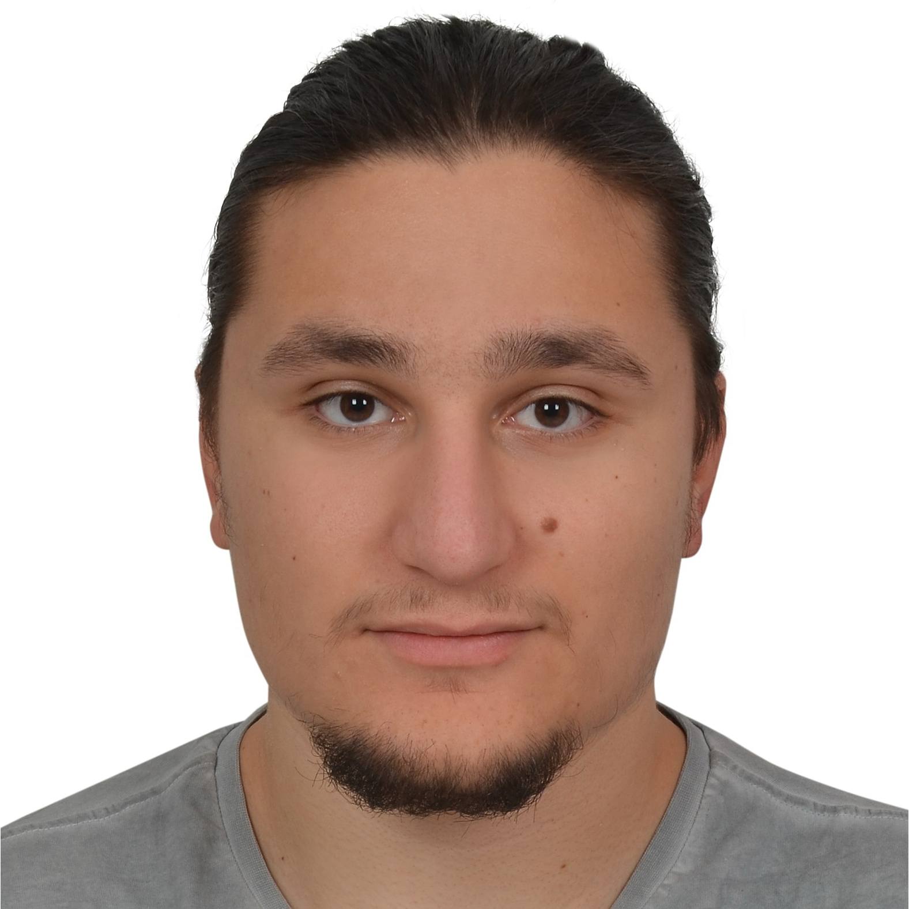
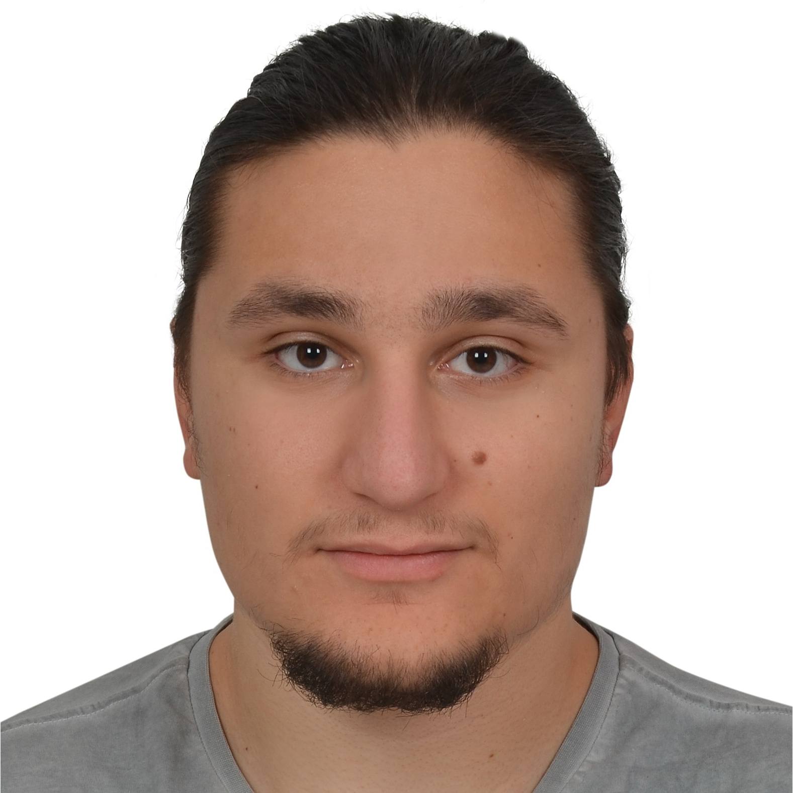

Course Information
About
As an exciting new field, deep unsupervised learning has gradually emerged as a promising alternative to supervised approaches to representation learning -- with some practical and theoretical considerations. To begin with, unsupervised data is much cheaper to obtain, but more importantly, as humans, we don't need millions of labeled data to learn.
This class will provide an in-depth and comprehensive overview of the fundamental concepts and recent advances in the field of deep unsupervised learning. The first part of the course focuses on deep generative models such as autoregressive models, normalizing flow models, variational autoencoders, generative adversarial networks and their extensions with discrete latent variables. The second part covers self-supervised learning, including pretraining of large language models. The class is mostly modeled after the Deep Unsupervised Learning course at Berkeley. The class is taught by Aykut Erdem. The teaching assistants are Andrew Bond, Hakan Capuk, and Ilkin Umut Melanlioglu.

 

Instruction style: During the semester, students are responsible for studying and keeping up with the course material outside of class time. These may involve reading particular book chapters, papers or blogs and watching some video lectures.
Time and Location
Lectures: Tuesday and Thursday at 14:30-15:40 (SOS 103)
PS Hour:Friday 14:30-15:40 (SOS Z27)
Communication
The course webpage will be updated regularly throughout the semester with lecture notes, presentations, assignments and important deadlines. All other course related communications will be carried out through KUHub Learn.
Prerequisites
COMP547 is intended for graduate students enrolled in Computer Science MS and PhD programs. Senior undergraduate students and all non-COMP graduate students need the instructor's permission to register for the class. The prerequisites for this course are:
- Programming (you should be a proficient programmer to work out the assignments and to implement your course project.)
- Calculus (differentiation, chain rule) and Linear Algebra (vectors, matrices, eigenvalues/vectors) (MATH107)
- Basic Probability and Statistics (random variables, expectations, multivariate Gaussians, Bayes rule, conditional probabilities) (ENGR200)
- Machine Learning or Deep Learning (you can still survive this course without a machine learning course before, but it is highly recommended (ENGR421, COMP541)
- Optimization (cost functions, taking gradients, regularization)
Course Requirements and Grading
Grading will be based on
- Assignments (21%) (3 assignments x 8% each)
- Midterm Exam (10%)
- Course Project (presentations and reports) (41%),
- Paper Presentations (8%),
- Paper Reviews (10%),
- Class participation (10%),
Reference Books
- Jakub M. Tomczak, Deep Generative Modeling, Springer Cham, 2025 (available online)
Schedule
| Week | Topic | Assignments |
| Feb 10-12 | Introduction to the course (Survey) Neural Building Blocks I: Spatial Processing with CNNs |
|
| Feb 17-19 | Neural Building Blocks II: Sequential Processing with RNNs Neural Building Blocks III: Attention and Transformers |
|
| Feb 24-26 | Autoregressive Models | Assg 1 out |
| Mar 3-5 | Normalizing Flow Models | |
| Mar 10-12 | Latent Variable Models | Assg 1 due, Assg 2 out |
| Mar 17-19 | Spring Break | |
| Mar 24-26 | Generative Adversarial Networks I | Project proposal due |
| Mar 31-Apr 2 | Generative Adversarial Networks II | Assg 2 due, Assg 3 out |
| Apr 7-9 | Diffusion Models I | |
| Apr 14-16 | Diffusion Models II | |
| Apr 21 | Strengths and Weaknesses of Current Generative Models | Assg 3 due |
| Apr 28-30 | Project Progress Presentations | Project progress reports due |
| May 5-7 | Video Generation | Midterm Exam |
| May 12-14 | Self-Supervised Learning I | |
| May 21 | Self-Supervised Learning II | |
| June 9-11 | Final Project Presentations | Final project reports due |